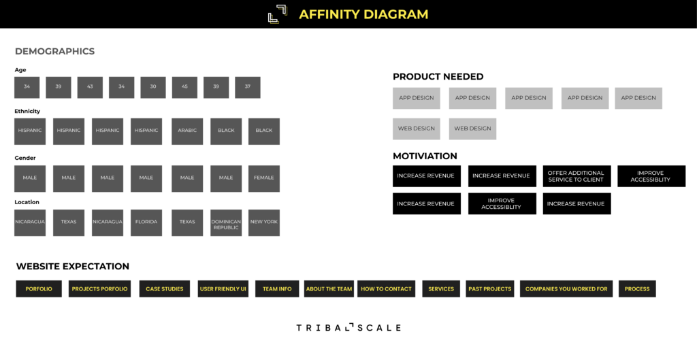
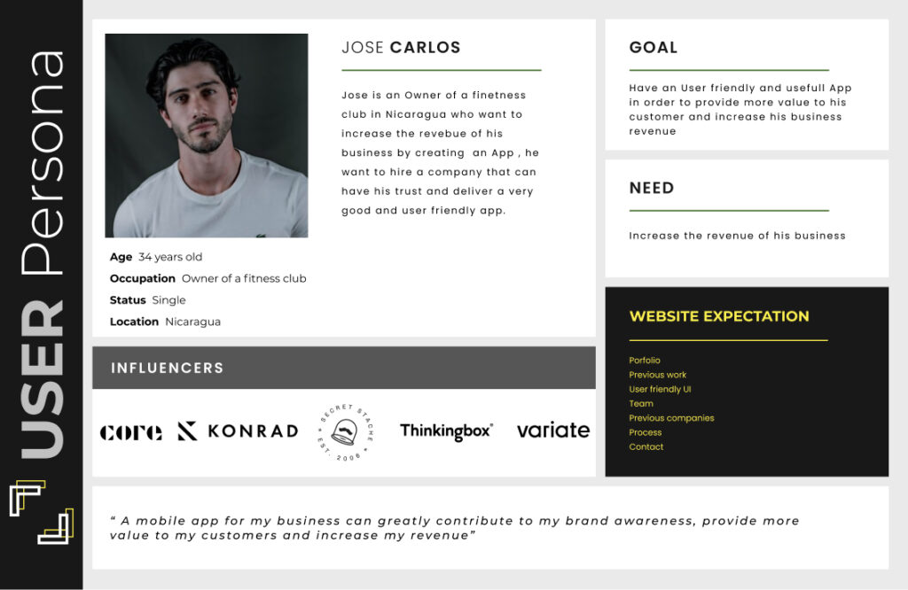
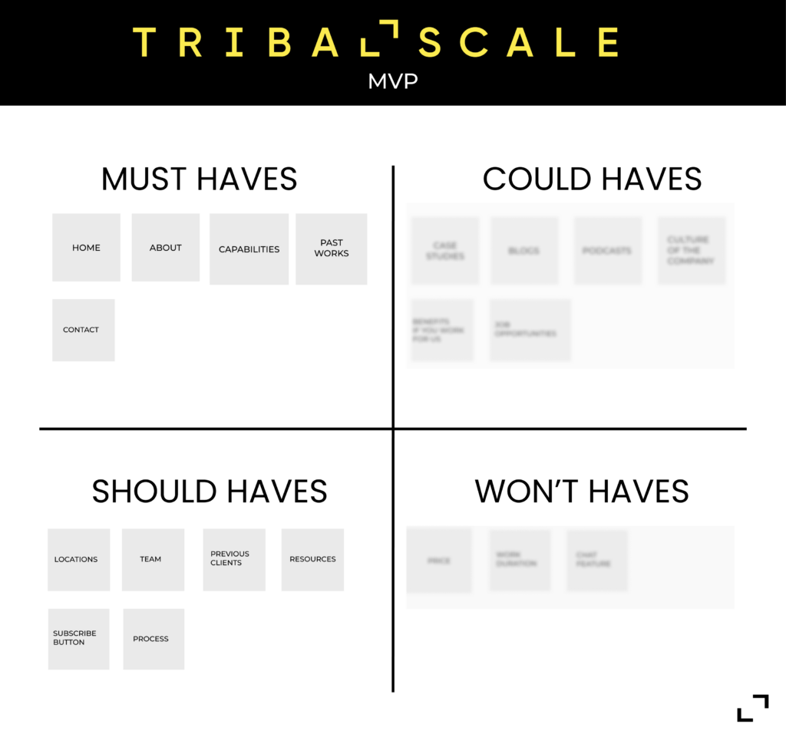
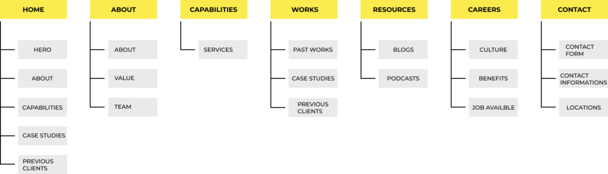

TribalScale had design capability, but the team needed a clearer standalone offer for prospective clients.
Case study
TRIBALSCALE
A website concept for Tribal|Design, an “agency within an agency” inside TribalScale, created to showcase design services, attract new clients, and turn an under-utilized design team into a revenue-generating department.
I interviewed stakeholders and entrepreneurs, synthesized findings, prioritized MVP features, mapped the site, and prototyped.
The website centers services, portfolio expectations, past-client credibility, contact paths, and self-navigation.
The prototype positions Tribal|Design as a clearer offer that can help attract new design clients.

My contribution
- Led user research, stakeholder discovery, interaction design, and UI design for the Tribal|Design website concept.
- Interviewed stakeholders and entrepreneurs to understand internal business goals and external client expectations.
- Used competitive analysis, affinity mapping, persona development, HMW framing, MoSCoW prioritization, sitemap creation, and prototyping to move from research to solution.
Challenge
TribalScale’s organization was heavily development-focused, with the design team representing a smaller and under-utilized part of the company. Stakeholders wanted a website that could highlight design services and generate new revenue outside larger projects.
The site needed to build trust with new clients already familiar with the TribalScale brand.
Research
- Interviewed the Associate Director and learned the company was approximately 70% development, 10% sales, 10% design, and 10% administration.
- Conducted 8 one-on-one interviews with entrepreneurs; half had already hired a design agency and half wanted to hire one.
- Users expected to see portfolio work, previous companies, capabilities, contact information, and a self-navigating, user-friendly website.
- Analyzed 5 digital agencies to identify market expectations and service presentation patterns.
Process evidence




Design decisions
The website highlights TribalScale’s design capabilities as a clear standalone offer.
Feature ideas were grouped with the MoSCoW method to define the minimum viable product.
The prototype helps users move efficiently to About and Service pages without friction.
Selected final direction
Outcome
The final prototype demonstrates an engaging and concise design-services website intended to prompt potential clients to contact TribalScale.
Success was defined as increased revenue and clients from the design department by making the team’s services easier to discover and trust.
- Turned an under-utilized internal design capability into a clearer standalone business offer.
- Aligned the website content with what potential clients said they expected: portfolio, capabilities, past work, contact, and easy navigation.
- Created a prototype that supports self-navigation to service and about pages, reducing friction for prospective clients.